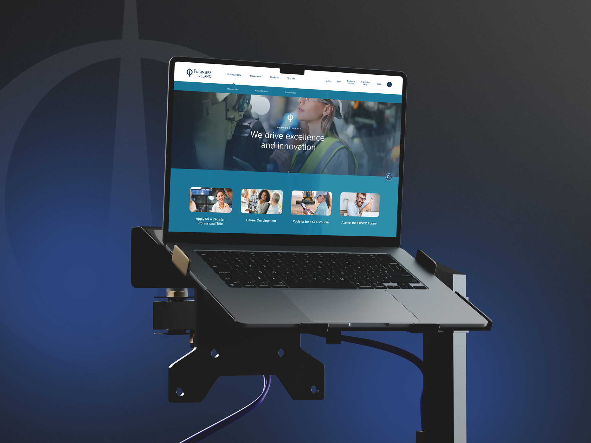
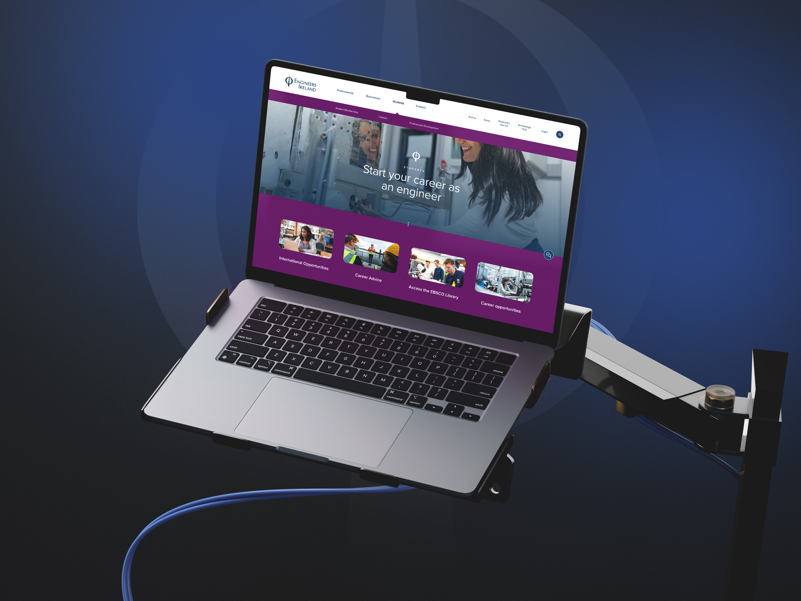
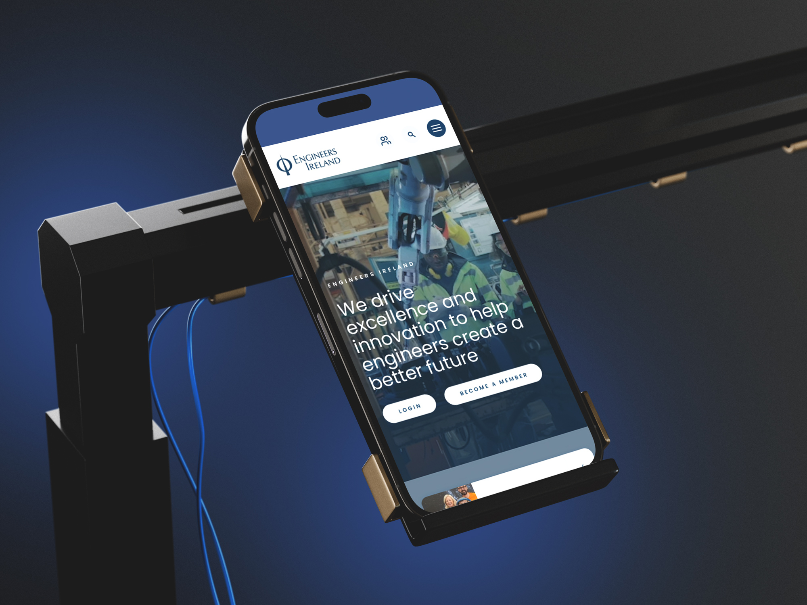
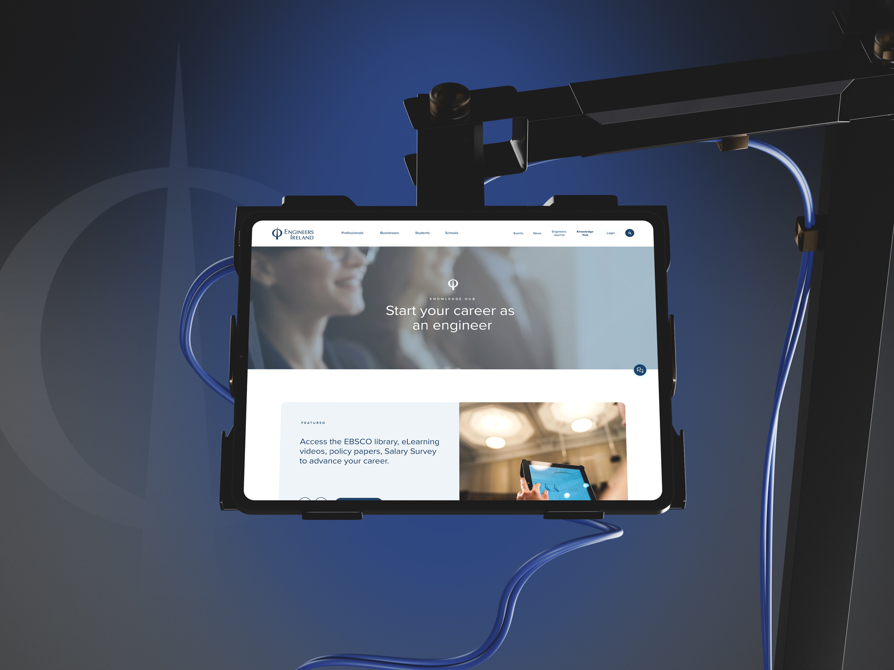
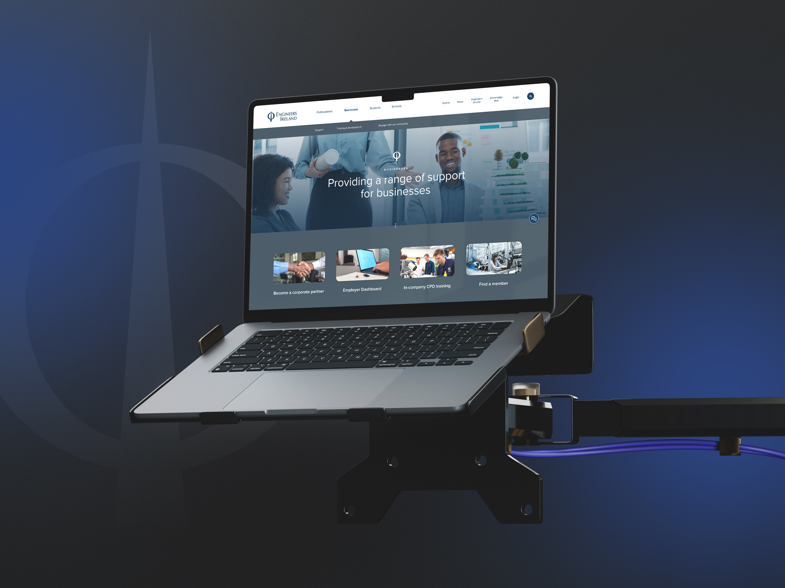
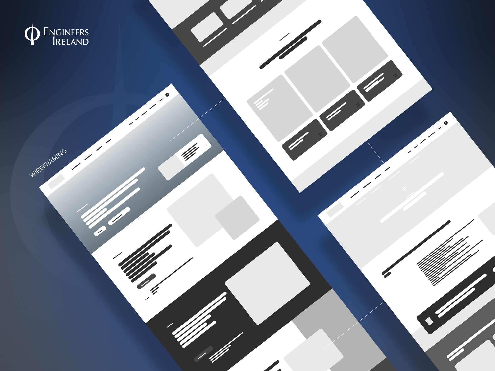
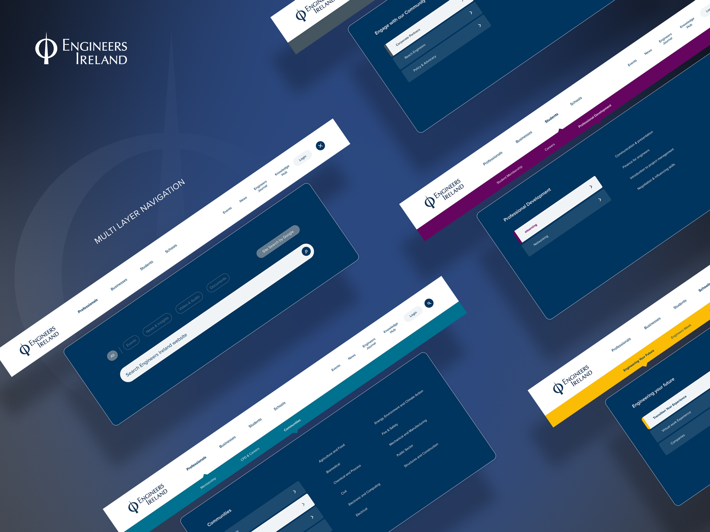
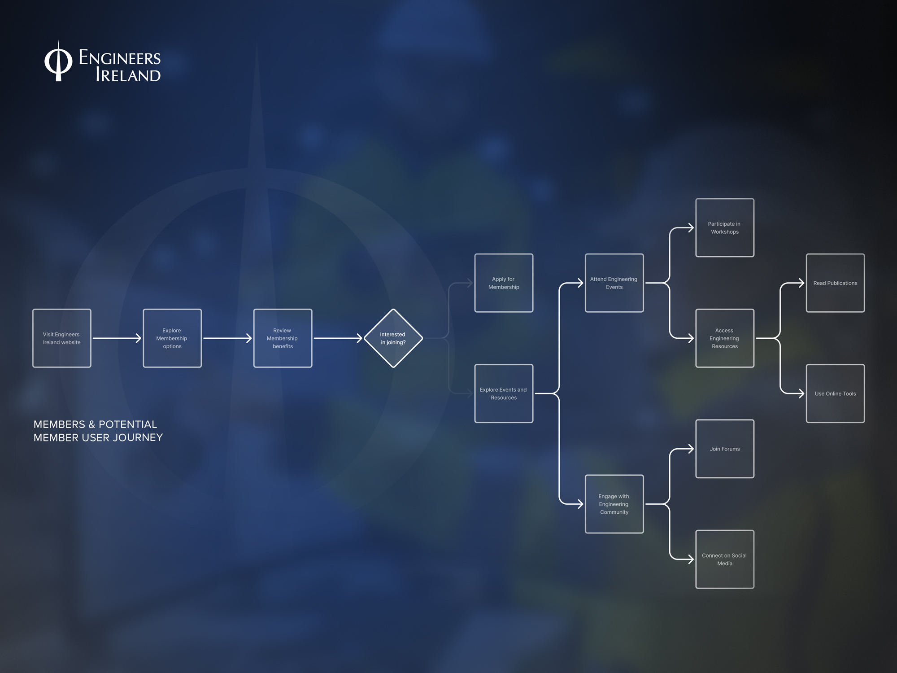
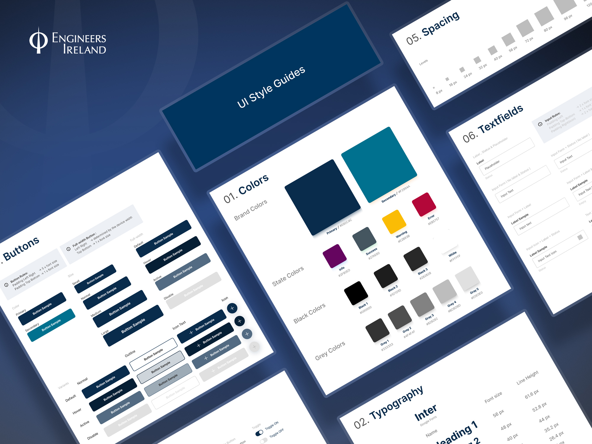

Work / 2025
Engineers Ireland
Engineering a Superior Digital Experience
Engineers Ireland is the professional body for more than 30,000 engineers across every discipline. I aligned their evolving brand with a modern, accessible web platform, rebuilding the site around clear user journeys for students, members and industry partners.

The challenge
The brand's digital expression needed clarity without losing heritage and authority. Members had to find accreditation, professional titles such as Chartered Engineer, events and resources far more easily, and the platform needed the accessibility, performance and content structure to scale.



Journeys first
I mapped the priority journeys (join and upgrade, CPD and events, accreditation and titles, news and case studies) and simplified navigation around them. Component-based page design with reusable patterns means new programmes, events and resources slot in without a redesign.

Accessible by design
Semantic structure, keyboard paths and alt-text guidance were built in from the start, alongside performance improvements throughout. I also delivered a brand toolkit of page components, typography and colour tokens, and usage guidance, so internal teams can publish consistently at scale.




Impact
The result is a clearer, member-first brand presence online with faster paths to high-value actions: joining, renewing, registering for CPD and finding standards and resources.
Process notes
How the work actually happened: the phases it moved through and the decisions that shaped it.
- 01UX research & IA
Priority journeys mapped with members: join, renew, CPD, accreditation, resources.
- 02Design tokens
Colour, type and spacing decisions captured once, applied everywhere.
- 03Component library
Reusable patterns for news, events, case studies and member actions.
- 04Templates & governance
Content models so new programmes slot in without a designer in the room.
- 05Handover
A documented system the in-house team publishes with, at scale, unaided.
Three decisions that shaped it
Journeys before pages
The old site was organised around the institution; the new one is organised around what 30,000 members come to do. Join and upgrade, book CPD, find accreditation, check a standard. Navigation, templates and content models all follow those journeys, which is why the high-value actions got faster.
Components before screens
Instead of designing pages, I designed the system that makes pages: tokens for colour, type and spacing, then a component library built from them. The payoff is governance. Two years of publishing later, the site still looks like it did at handover, because the team assembles from the system rather than improvising.
Accessibility as default
Semantic structure, keyboard paths and contrast rules live inside the components themselves, so every new page inherits accessibility instead of needing an audit. For a professional body, being usable by every member is not a feature, it is the brief.
Inside the design system
Documentation extract: the tokens and components the platform is assembled from.